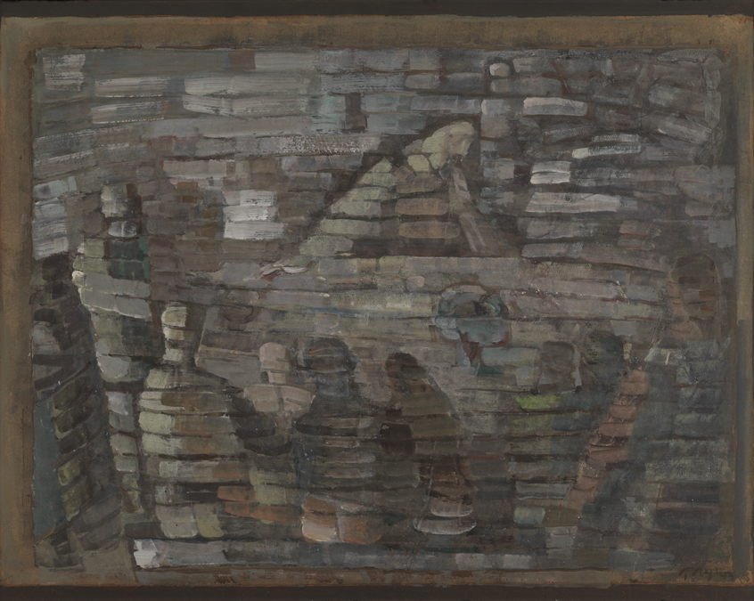
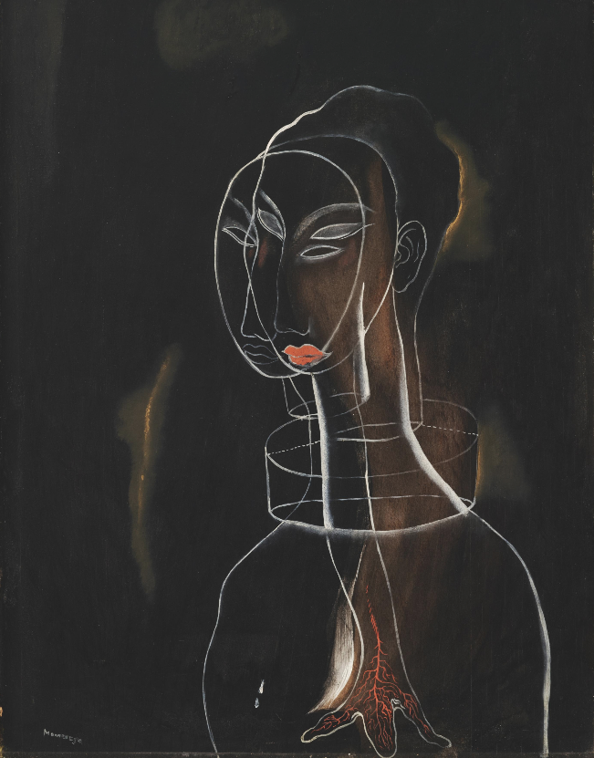

About
Who I am
A short summary about my work, my interests, and the things that keep me curious.

About
I am a graduate student at the University of Pennsylvania pursuing an M.S.E. in Robotics. I previously earned a B.A. in Computational Physics from Franklin & Marshall College where this experience laid formed my technical foundation, while the broader liberal arts environment at Franklin & Marshall shaped how I communicate, collaborate, and think about the impact of technical work. My academic and professional interests lie at the intersection of robotics, computer vision, and deep learning, with a particular focus on state estimation and decision-making in complex systems.
I am most drawn to technical problems that require careful attention to both theory and implementation, requiring a willingness to engage deeply with detail. Over time, I have worked on a range of problems including fashion-focused computer vision models, soccer analytics and reinforcement learning frameworks, drone path planning and flight optimization, and six DoF robotic manipulation. While these projects span different domains, they are united by the common goal of using perception and learning to make better decisions under uncertainty.
Research interests and personal projects
This section includes some of my favorite paintings.

Alongside formal coursework, I approach personal projects as both a portfolio and a space for exploration. Rather than focusing exclusively on robotics, I have intentionally applied similar technical ideas to domains that feel intellectually engaging and personally meaningful, particularly soccer and fashion. These projects are motivated less by the domains themselves and more by a recurring interest in how learning-based systems form internal representations of the world.
One of the ideas that has most strongly influenced my recent work is representation learning, as described by Antonio Torralba in Foundations of Computer Vision. His chapter on the subject offers a clear and accessible perspective that fundamentally reshaped how I think about deep learning models. Rather than “understanding” the world on their own, models learn internal representations shaped by the objectives we define. The loss function guides what a model attends to, how it compresses complex data into simpler structure, and which features become useful for later tasks. As Torralba notes, “A good representation is one that makes subsequent problem solving easier.” Viewed this way, learning is a process of structured abstraction, where high-dimensional data is reduced into representations that preserve what matters for a given goal. Thinking about learning in these terms provides a concrete way to reason about how models interpret data, and why different objectives can lead to fundamentally different internal views of the same world.
I often think about this process through a simple analogy. Imagine a toddler who is rewarded every time they correctly identify a cardinal in the sky. At first, the bird appears as a complex combination of color, shape, texture, and motion. Over time, driven by the incentive, the child no longer needs to process the full richness of the scene. The concept of a cardinal becomes reduced to a few salient cues: red coloration, a triangular silhouette, a particular pattern of movement. Recognition becomes efficient because the internal representation has become structured. The child no longer sees the entire bird; they see just enough.

This is why I find machine learning projects in non-traditional domains so compelling. My interest in areas such as art, fashion, and sport comes from a belief that representation learning is most revealing when applied to systems that resist compression. In these settings, performance alone is insufficient; understanding how a model interprets the data becomes essential to evaluating both its limitations and the assumptions embedded in its design. Model behavior, from this perspective, reflects our objectives as much as it reflects the system itself, since the objectives we define encode what we consider meaningful. When models struggle in these domains, they often expose mismatches between our formalizations and the underlying complexity of the problem. The same lens applies to more traditional fields such as robotics, where learned representations directly shape perception, planning, and control, and where failure modes can have tangible real-world consequences. Across both settings, careful inspection of representations is not optional, but central to understanding whether a system has learned something faithful to the task we intend it to perform.

In these settings, representation learning reveals both the power and the limitations of machine learning. Models attempt to compress vast, nuanced human systems into tractable internal structures, and in doing so, they expose what is lost as much as what is retained. When that compression is carefully structured, abstraction can still preserve meaning, but only if we understand what has been emphasized and what has been discarded. For me, this makes interpretability a first-order requirement: not merely a way to explain a prediction after the fact, but a means of assessing whether a system has learned something faithful or merely something useful. The goal is to build models that serve a purpose while remaining legible enough to evaluate honestly, especially when the domain itself cannot be reduced to a single tidy definition of correctness.
Perspective beyond the work

Long before robotics or machine learning became central to my life, soccer occupied that role. Competing as a collegiate athlete alongside a demanding academic program fundamentally shaped how I approach challenges. Progress was often incremental, outcomes uncertain, and failure a frequent teacher. Over time, I experienced a wide range of roles, from starter to bench player to serving as a team captain, each offering its own lessons in responsibility, leadership, and resilience. Those experiences continue to influence how I work today, reinforcing the value of patience, discipline, and sustained effort when meaningful progress is not immediately visible.
Equally formative in shaping how I think was my experience studying literature with Professor Scott Lerner at Franklin & Marshall College, the most influential professor of my life. His courses taught me how to read with patience and humility, and how to treat uncertainty not as something to be resolved immediately, but as something to be examined carefully. Through his courses on Italo Calvino and Luigi Pirandello, Professor Lerner exposed me to some of my favorite books such as Il sentiero dei nidi di ragno, Il fu Mattia Pascal, and Le città invisibili, but more importantly, to a way of thinking that extended well beyond literature itself. His teaching emphasized careful reading, sustained reflection, and disciplined interpretation, encouraging me to sit with ambiguity rather than resolve it prematurely. Over time, this approach matured me as a student and as a thinker, sharpening my ability to reason, critique, and form arguments in both technical and non-technical settings. I learned to carry analytical tools across domains, applying rigor where precision is required and interpretive sensitivity where structure alone is insufficient. Although his courses were not technical, they fundamentally reshaped how I learned to see the world, and that perspective continues to influence how I ask questions and approach the work I do today.
At my core, I am guided by a mindset shaped by athletics, liberal arts education, and technical practice. I believe that breadth, an ability to see context, history, and consequence, allows one to approach problems differently than a purely technical perspective alone. Engineering and machine learning do not exist in isolation; they are embedded within social, cultural, and human systems, each having impacts that extend far beyond performance metrics. Seeing the context in which products and models exist is central to meaningful progress, and being blind to those contexts is often what leads to harm or poor decision-making. My work is driven by the belief that thoughtful engineering, grounded in both rigor and perspective, is essential to building systems that genuinely serve people.